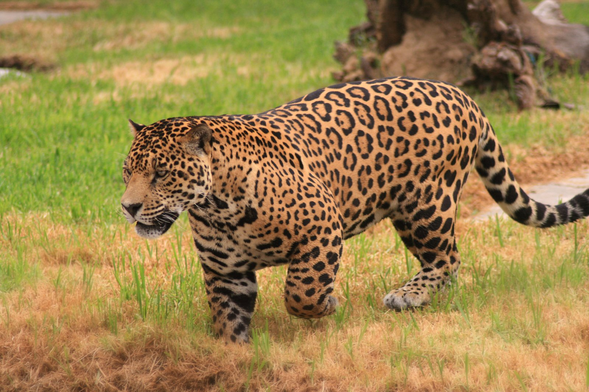

Viva
Onça
Ínicio
A onça-pintada
Seja um membro
A Onça-pintada

Especificações
Nome cientifico
Panthera onca
Estado de conservação
Quase ameaçada
Expectativa de vida
12-15 anos
Peso (adulto)
56-158 kg
Comprimento (adulto)
1,12-1,85 m (sem a cauda)
Curiosidades
É o terceiro maior felino do mundo
Tem a mordida mais forte entre os felinos
Está no topo da cadeia alimentar
É um animal crepuscular e solitário
Existem indivíduos totalmente pretos